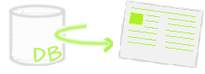

|
Internationalization
| Software localization is a process of translating software user interfaces from one language to another and adapting it to suit a foreign culture. In Open-jACOB you can display different language translations at run-time based on individual user preferences. Your single generated application can load multiple resource files, allowing it to display different languages for different users. |

| Application Wizard makes creation of Open-jACOB applications easier and quicker. The Open-jACOB Designer includes a number of pre-defined application starter kits. Each starter kit is a full running Open-jACOB Application. Select the application template from the Open-jACOB group which one fits for the provided task best. |
|
DB Designer

| TODO: Describe this feature |
|
UI Designer
| TODO: Describe this feature |
|
Easy Code Navigationr
| TODO: Describe this feature |
Buildin Features of Open-jACOBCore Engine Rule Engine Reporting Designer DB-Layer UI |
 Contact: info AT openjacob DOT org
|